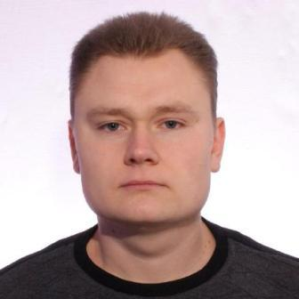

Про себе

Усім привіт! Мене звати Остап і мені 30 років. Після закінчення 9 класу СШ № 99 я поступив до Львівського економічного ліцею. Цей крок можна вважати моїм першим кроком до зрілого життя. Навчання у ньому суттєво відрізнялося від навчання у школі. По-перше, в ліцеї ми вивчали усі предмети які студенти вивчали в Львівському банківському інституті на 1 курсі, а по-друге, викладачі уже ставилися до нас як до студентів. Саме там я зустрів справжніх друзів з якими досі підтримую зв'язок, хоча це не так легко при сучасному ритмі життя.Тому напрямок навчання уже був визначений і після завершення навчався у ЛЕЛ я продовжив навчання у Львівському банківському інституті на факультеті банківської справи за спеціальстю економічна-кібернетика.
Після закінчення четвертого курсу ЛБІ отримав диплом бакалавра, перевівся на заочну форму навчання і розпочав пошуки роботи. Молодий, сповнений ентузіазмом, я прагнув чимпошвидше розпочати кар'єру у банку. І тут я зустрівся з суворою реальністю життя. Дивно, але на той час, щоб тебе взяли на роботу, необхідний був досвід роботи у банку. А де ж він візьметься цей досвід, якщо ти молодий-зелений студент? Але моя впертість, через кілька місяців пошуків принесла свій результат і я таки отримав посаду інженера у відділі ІТ Львівської філії АКБ "Форум".
Саме там з новими друзями я і познайомився із такою захоплюючою розвагою як страйкбол. Про що власне і хочу розказати вам на сторінках цього сайту. Сподіваюся вам буде цікаво! :)